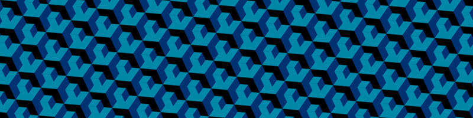

Hello World!
I am a Masters student in Software Engineering at Penn State and I hold a Bachelor's degree in Computer Science.
As a software engineering student, I have developed a deep understanding of software design principles, programming languages,
and software development methodologies. Throughout my academic journey, I have gained practical experience in various programming languages,
including Java, Python, and C++, and I have honed my skills in software testing, debugging, and optimization.
Apart from my academic qualifications, I am a self-motivated individual who is passionate about technology and innovation. I am always eager
to learn and explore new concepts in the field of software engineering, and I am dedicated to developing software solutions that are efficient,
reliable, and scalable.
In my free time, I enjoy exploring new technologies and experimenting with programming projects. I am also an avid reader
and enjoy reading books on software engineering, computer science, and technology.
Overall, I am a driven and passionate individual who is committed
to making a positive impact in the field of software engineering.
View my Resume